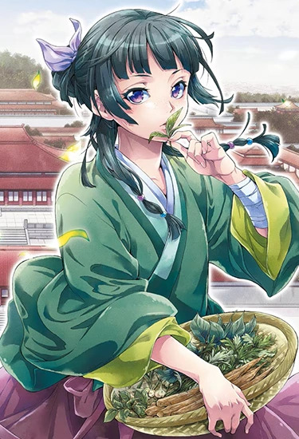

"There are hundreds, if not thousands of flowers in the world. Comparing a Peony to a Bellflower is pointless. Who has the right to judge which is more beautiful?"
Maomao
A fan journal about the apothecary who can't resist a puzzle, a plant or a poison: her voice, the cases she cracked and the remedies she brewed along the way.

Maomao
If I ever die, let it be by poison. At least then, I'll understand what killed me.
Knowledge is both my weapon and my curse. The more I know, the less I can pretend to be blind.
People are easily blinded by what they want to believe, ignoring the physical evidence staring them right in the face.
Maomao deduces that imperial infants are dying not from a "curse," but from lead-based face powder worn by their mothers. Her warning saves a child, and ends her life as an unnotices laundry maid.
After a death in the palace, Jinshi sends Maomao to look into mushrooms. She follows a trail of the kind that grow around animal remains, and a quiet death turns into a murder case.
A craftsman leaves three sons three strange inheritances. Maomao reads the riddle through his trade: a lead alloy that melts close to an open flame.
Maomao deduces that an official at the altar is about to be crushed by a sabotaged pillar. She rushes the stage, unaware the official is actually Jinshi in ceremonial disguise, and shoves him aside just as the structure collapses, resulting in an injury in her leg.
To please Jinshi, Maomao crafts potent chocolate treats by blending cocoa, honey, and high-proof alcohol. The recipe acts as an "aphrodisiac" because its stimulants, mood boosters, and alcohol lower inhibitions for characters unaccustomed to them.
A rare and prized medicine, and the reward Jinshi promises her for investigating a palace plot. He keeps his word the next day.
Gathered at Jinshi's request. The same mushrooms that grow around carcasses become the key clue in her second great investigation.
The attractive eunuch who traced the face-powder warning back to Maomao, and who has been bringing her new puzzles ever since.